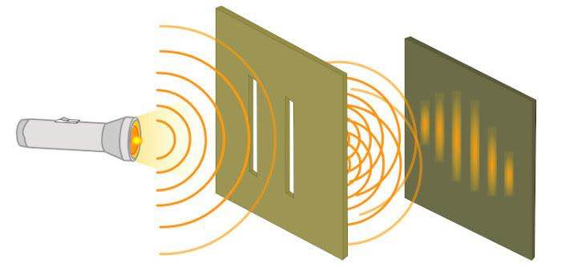
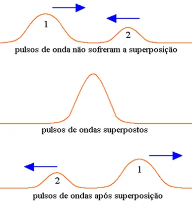
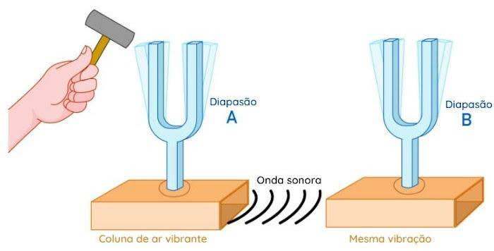

A fórmula de Taylor permite determinar a velocidade das ondas em cordas que estão tensionadas, como as de instrumentos musicais.
As cordas tensionadas, ou seja, cordas esticadas, constituem ótimos meios para observar a propagação de ondas transversais. Considerando uma corda homogênea e de secção constante, de massa m e comprimento L, sua densidade linear de massa (ρ) é: p=m/L. Podemos ver que, em relação à propagação de um pulso transversal ou de uma onda periódica transversal na corda, a velocidade com que uma onda periódica propaga-se depende da densidade linear (ρ) da corda e da intensidade da força tensora (F) a que ela está sujeita. Esse estudo, feito experimentalmente por Marin Mersenne, com cordas vibrando com baixa frequência e cordas de instrumentos sonoros, foi utilizado matematicamente pelo britânico Brook Taylor.
A difração pode ser definida como a capacidade das ondas em contornar obstáculos. Quando uma onda choca-se com um obstáculo que possui uma abertura com dimensões comparáveis a seu comprimento, as partes da onda que passam pelo espaço aberto alargam-se e atingem as regiões opostas ao obstáculo.
A interferência de ondas é o fenômeno que ocorre em virtude do encontro simultâneo de duas ondas que se propagam no mesmo meio com sentidos contrários. um fenômeno típico dos movimentos ondulatórios, ou seja, pode-se obter a interferência com duas ou mais fontes luminosas ou fontes sonoras, como o alto-falante.
A ressonância ocorre quando uma onda externa tem a mesma vibração que a vibração de algum outro corpo. Nessa situação a vibração externa é absorvida pela interna e, assim, a vibração natural é ampliada.
